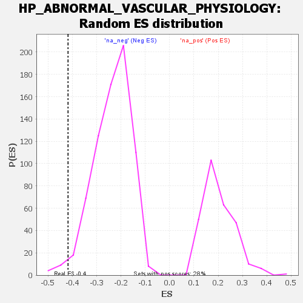

| | | Dataset | genes_ranked_stat_0.1 |
| Phenotype | NoPhenotypeAvailable |
| Upregulated in class | na_neg |
| GeneSet | HP_ABNORMAL_VASCULAR_PHYSIOLOGY |
| Enrichment Score (ES) | -0.4181245 |
| Normalized Enrichment Score (NES) | -1.7710519 |
| Nominal p-value | 0.019444445 |
| FDR q-value | 0.9507462 |
| FWER p-Value | 1.0 |
Table: GSEA Results Summary
 Fig 1: Enrichment plot: HP_ABNORMAL_VASCULAR_PHYSIOLOGY
Fig 1: Enrichment plot: HP_ABNORMAL_VASCULAR_PHYSIOLOGY
Profile of the Running ES Score & Positions of GeneSet Members on the Rank Ordered List
| SYMBOL | RANK IN GENE LIST | RANK METRIC SCORE | RUNNING ES | CORE ENRICHMENT | | 1 | SLC4A1 | 127 | -2.733 | -0.0868 | No |
| 2 | ENPP1 | 193 | -2.806 | -0.1077 | No |
| 3 | NAGS | 219 | -2.829 | -0.0864 | No |
| 4 | COL1A2 | 398 | -3.040 | -0.2213 | No |
| 5 | ADA2 | 420 | -3.081 | -0.1916 | No |
| 6 | RNF125 | 638 | -3.535 | -0.3589 | Yes |
| 7 | FLNC | 672 | -3.649 | -0.3323 | Yes |
| 8 | GUCY1A1 | 726 | -3.845 | -0.3232 | Yes |
| 9 | MLXIPL | 734 | -3.872 | -0.2657 | Yes |
| 10 | ENG | 754 | -3.935 | -0.2196 | Yes |
| 11 | TCIRG1 | 794 | -4.066 | -0.1922 | Yes |
| 12 | P4HA2 | 868 | -4.282 | -0.1967 | Yes |
| 13 | KCNN4 | 880 | -4.351 | -0.1353 | Yes |
| 14 | TERC | 887 | -4.370 | -0.0684 | Yes |
| 15 | NKX2-5 | 891 | -4.421 | 0.0025 | Yes |
| 16 | TLR4 | 939 | -4.898 | 0.0355 | Yes |
Table: GSEA details [plain text format]

Fig 2: HP_ABNORMAL_VASCULAR_PHYSIOLOGY: Random ES distribution
Gene set null distribution of ES for HP_ABNORMAL_VASCULAR_PHYSIOLOGY